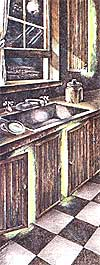
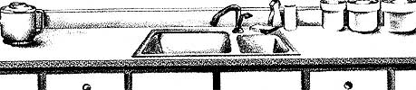
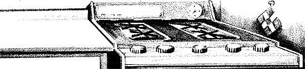
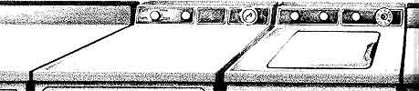
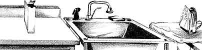

Each day the average American uses (directly and indirectly) hundreds of laborsaving formulations, and even the conscientious consumer is likely to be coerced into pushing the buttons on a few spray cans. In the last 50 years, chemicals (that is, those of the synthetic variety) have become an integral part of the U.S. way of life-not to mention of our economy.
It would be easy to rail against the trend. After all, a hundred years ago people got along pretty well without an arsenal of aerosols. What's more, the harmful effects of chemical production and the disposal of its by-products may be the most serious environmental problems facing the country today. Indeed, there are frighteningly dangerous compounds that continue to be manufactured and used, despite widespread scientific knowledge of (and complaints about) their harmful effects. Only public outcry will bring grease to the wheels of regulation in a government bogged down in bureaucracy and badgered by commercial interests.
However, it's consumer self-defense (not action) that's the subject of MOTHER's May/June mini-section. As you'll learn in the following pages, federal regulation is no assurance of safety from a whole array of compounds many of us use in our own homes. We'll be discussing substances that are much more insidious than newsworthy contaminants such as dioxins or polychlorinated biphenyls (PCB's), even though they are much less dangerous on a per-unit basis. Most consumers are practically unaware of them, because the compounds may go unmentioned on labels or because their names are indecipherable. Some of the chemicals are additives that are known to be hazardous. Others are dyes or flavorings that have never been adequately tested. But the most sinister aspect of the proliferation of chemicals in the household is that most of us expose ourselves to these laborsaving elixirs for hours on end in our own homes every day. In effect, we live in chemical warehouses.
WHAT IS A CHEMICAL?
Over the last few years, a major chemical company has used advertisements in its attempt to make the point that since all matter is made up of chemicals, that term certainly isn't a dirty word. Whatever you may think of the firm's motivations, the ads do make a worthwhile point: Simply because a compound sounds complex, that doesn't mean it's dangerous. Unless you have a strong background in chemistry, you probably won't be able to tell a harmful substance from a beneficial one purely on the basis of its name. For example, vitamin B 6 (an essential nutrient) goes by the technical names of pyridoxine or pyridoxine hydrochloride, either of which is a fair mouthful to pronounce.
Likewise, simply being of natural (rather than synthetic) origin is no guarantee of a substance's safety. The ranks of suspected and known toxic and cancer-causing compounds are filled with plants and minerals. Generalizations really don't go very far when we're discussing hazardous substances. To make sensible decisions about the chemicals you live with, you'll need to be well armed with information.
WHAT IS HAZARDOUS?
There are a number of different and fairly obvious ways in which chemicals can harm us, but judging the degree of risk is a very difficult matter. Toxic compounds cause one or more of a variety of bodily malfunctions. Perhaps they depress the central nervous system, making us drowsy or even causing death. Or maybe they attack the liver, where they accumulate when they're cleaned from our blood. The question is, how much of a particular substance does it take to cause such harm? If an inordinately high dosage must be taken to harm a human, the substance may be considered toxic but not hazardous.
Only if that toxicity level is within the range of normal human in take (and a large margin of safety is used in the calculation) is it considered hazardous. The issue of toxicity is further complicated by the fact that bodily harm can be produced in a couple of different ways. A toxicant is said to be acutely toxic if it triggers a reaction soon after a single ingestion; a chronic poisoning may not produce symptoms until the compound has accumulated to a threshold level in the body-days, months, or years later.
Scientists have developed a system for denoting the comparative toxicity of substances. Known as "lethal dose, 50%" (LD 50 ), it indicates the amount of a compound that must be administered to cause half of the test sample to die. For obvious reasons, LD 50 tests aren't run on humans; mice or rats are the most common "guinea pigs". The results can't be directly compared to human exposure, though, because animals don't necessarily react to toxicants in the same ways that people do.
The tested chemicals are also administered in different fashions-orally, by under-skin injection, directly into the stomach, etc.-which can influence the outcome of an experiment. A substance may not be readily absorbed through the skin, while inhalation may allow it to pass through lung tissue quite easily.
Furthermore, LD 50 isn't necessarily a good measure of chronic toxicity. Though a large quantity of a compound may be required to produce immediate death, much smaller amounts may add up-over continous exposure-to life-threatening levels.(Lead poisoning is a good example of this phenomenon.) Extended, expensive studies are required to determine chronic effects.
There are further complications in the matter of determining the safety of a substance. For example, though allergy studies are seldom done prior to the introduction of a chemical to the market, many substances can have life-threatening effects on people with asthma. Also, in a process called synergism some comparatively innocuous chemicals may combine with others to increase the risk of each or to form a different (and more hazardous) substance. To date, the general population-that's us -is essentially the test sample for problems of this sort.
Furthermore, though the measure of a chemical's toxic or allergenic effect on humans is inexact, those techniques are models of precision compared with the process of calculating a compound's cancer-causing potential. First of all, there is the unanswered ques tion of how cell mutation relates to cancer. If a compound produces genetic mutation in laboratory experiments, it's said to be mutagenic. If it produces cancer in humans or animals, it's said to be carcinogenic. Most, but not all, mutagens turn out to be carcinogens; so far, all carcinogens have proven to be mutagenic. Yet another type of mutating (but not necessarily cancer-causing) compound is a teratogen, which causes malformation in the fetus.
Substances are tested for carcinogenicity by administering large dosages (usually hundreds or even thousands of times the amount found in normal human exposure) to laboratory animals over a period of a few weeks to a few years. It is assumed that the production of cancerous cells (if there is any) can be speeded up by increasing the dosage to very high levels. Industry isn't patient enough to wait 20 or 30 years to look for evidence of increased cancer from the use of a substance that they propose to put on the market. In addition, the life spans of most test animals are comparatively short. If no cancer is evident, then the substance is considered to be safe. But if some tumors show up, then the risk to humans is calculated by the dosage level and the incidence. The resulting figure estimates the number of cancer deaths per unit (usually thousands or millions) of population.
The Reagan Administration has attempted to change Food and Drug Administration and Environmental Protection Agency policy from a no-risk cancer stand to a cost-benefit one. Though the officials have been unsuccessful in developing a way of assigning dollar values to cancer deaths, regulations have been altered to allow a higher incidence of cancer from the use of some substances. The methods, regulations, and economics of determining the hazards of chemicals are nothing less than a morass; from our point of view they can probably be summed up thus: Will possibly hazardous compounds be considered innocent until proven guilty?
Substances that are labeled with a C are thosethat cause cancer in animals or humans. Those that cause allergic reactions in sensitive individuals are denoted by an A. Compounds that cause birth defects, spontaneous abortions, or other damage to animal or human fetuses have a T (for teratogen) next to them. All toxicants, hazardous either in small or large dosages, are marked with a skull and crossbones. You may also encounter two other symbols next to some compounds: An asterisk (*) indicates that dosages far higher than encountered in normal exposure are required to produce an adverse effect; suspected (but not confirmed) carcinogens and teratogens are labeled C? or T?; other questionable substances are marked with ? only.
HOW TO USE THIS GUIDE
We've divided the subject matter of the Guide to Hazardous Household Substances into four sections, according to the locations in which you're likely to encounter different categories of harmful chemicals. You'll note as you read through the information that many of the substances are used in all sorts of consumer products. Formaldehyde, for example, is ubiquitous in the household. Therefore, for the sake of space, we'll often direct you to a previous discussion of a commonly occurring substance's effects.
Each room of our model household includes an introduction to the regulations that help protect us from the dangerous substances that might be found there. This is necessary because different wings of our government deal with food, cleansers, building materials, etc. In some cases, we'll find that there is, in effect, no regulation at all! For those of you who will use the compounds that make up the body of each section, the labeling requirements that the agencies impose on different types of products will be extremely important. Without labels, you can do little more than suspect what may be included in a product.
Of course, this manual can only highlight those toxicants and carcinogens that have been judged by experts to pose the most direct danger to you. There are a number of important areas that we've been forced to pass over, because not even these pages are enough to address all the hazards around the house. In general, we've tried to hit areas where consumers are least protected and most likely to be unaware of the existing hazards. Hence, we've not covered the synergistic reactions that can occur between common ingredients and prescription drugs. (Your physician should inform you of the interactions that are possible whenever he or she writes a prescription. In addition, an excellent reference to drug interactions can be found in Joe Graedon's People's Pharmacy-Two [Avon Books, 1980, $5.95].) Nor have we covered potentially dangerous household appliances, from microwave ovens to lawn mowers. All of the items listed in the following pages are substances that can cause you harm.
The lists have been compiled by sifting through mounds of books and reports to pinpoint those chemicals (of the thousands introduced annually) that are both dangerous and commonly used. Throughout the mini-manual we've tried to list sources of more information. You should know, though, that since the 1980 election it seems to have become increasingly difficult to gain access to such information. References in popular and technical literature have dropped to a mere trickle. To that extent, preparing this section has been very frustrating: All too often there are no concrete answers to the question of whether a substance is hazardous or not. Wherever there is doubt, we hope we've erred on the side of safety!
If you were to sit down and read this manual from beginning to end, you might come away with the impression that the situation is hopeless . . . that there's just no way to avoid hazardous substances. And it's true that most of us are going to be unable (or unwilling) to stay away from everything dangerous all the time. The point of this manual, though, is not to suggest that you should never again touch any of the things mentioned herein. Rather, we hope that you'll use the information to help recognize substances that may pose a hazard (even if it's small) and to limit your exposure to whatever degree is possible and practical. With knowledge, you can do your best for yourself and yours.
Someone's in the KitchenWith Dioctyl Sodium Sulfosuccinate
Food
The U.S. Food and Drug Administration (FDA) looks after the safety of our food and pharmaceuticals. Its legal basis is the Food, Drug, and Cosmetic Act of 1938-backed up by subsequent additions, including the Pesticide Chemicals Act of 1954, the Food Additives Amendment of 1958, and the Color Additives Amendment of 1960. For good reason, food is the most regulated of all consumer products, but the extent of protection may not be as great as you think.
Before an additive may be used in food, it must be demonstrated to be safe. The testing, however, is conducted by the industry that proposes to sell it, not by the FDA. Furthermore, there's a loophole in the Food, Drug, and Cosmetic Act's mandate for safety: Dangerous substances are prohibited from being added to food . . . except where they are "unavoidable" or "necessary in production" and are used in small enough doses that no apparent hazard is presented to test animals. As you can see, the mandate for safety is hazy.
With the later amendments to the 1938 legislation, an important section called the Delaney Clause was added. This regulation prohibits the use of any additive that has been found to induce cancer in animals or humans. The Delaney Clause was fought by the FDA, the American Medical Association (AMA), and the food industry. Their argument, of course, was that the stipulation of "no risk" is excessively restrictive: In their view, the benefits of some additives outweigh the hazards. Twenty-five years after its inception, the Delaney Clause is still under attack. Separate amendments proposed to Congress in October of 1983-by Orrin Hatch of Utah in the Senate and Edgar Madigan of Illinois in the House-have, with the help of heavy lobbying from the plastics, meat, and soft drink industries, attempted to strike down or replace the Delaney Clause. (If you plan to write to your representative to express your opinion about such changes to the Food, Drug, and Cosmetic Act, the pieces of legislation referred to are Senate bill S. 1938 and House bill H.R. 4121.)
Under the Food Additives Amendment of 1958, additives that were used previous to that time and that showed no evidence of harm were permanently listed as Generally Recognized as Safe (GRAS). Only substances added to the list after the year of the amendment's enactment were to be tested. During his administration, President Nixon ordered the FDA to conduct research on all food additives. This work has been going on since 1970 and is not yet completed, but periodic updates are made to the GRAS list. Items are classified as [I] demonstrated to be safe, [II] safe at present consumption levels, [III] the question of safety requires further study, [IV] evidence of hazard, and [V] not enough data. Nearly all of the additives that are listed below fall into categories III, IV, or V.
Food products have the most adequate labeling requirements of all the consumer goods that we're examining in this mini-manual. Each constituent used to formulate the product must be listed on the label in descending order of its percentage of the whole.
There are, however, a number of exemptions that "streamline" labeling. For one, "incidental" compounds used to process a food, such as flour bleaches, need not be listed . . . because they aren't pres ent in the final product at more than trace levels. This disregards the fact that the processing chemicals may alter the nutritional value of food significantly.
There are also a number of "standardized" products that don't require labeling as long as their makeups are within the guidelines of the 20 or so additives allowed by the FDA. Dairy products provide examples of standardized nonlabeling. Manufacturers are also allowed to use general descriptions, such as "preservative", "antioxidant", "sweetener", "artificial flavor", and so on. Without the specific name, we have no way of knowing whether or not the compound used is one about which we should be concerned.
For further information on food additives, consult A Consumer's Dictionary of Food Additives by Ruth Winter (Crown Publishers, Inc., 1978, $4.95) or The Food Additives Book by Nicholas Freydberg and Willis A. Gortner (Bantam Books, Inc., 1982, $9.95).
Preservatives/Antioxidants
BHA (butylated hydroxyanisole): A compound used to prevent fats and oils from becoming rancid.
-Hazards: Enlarges the livers and kidneys of test animals. May cause enzyme changes that make the body more susceptible to cancer or that affect reproduction.
-Found mainly in: Baked goods, beverages, breakfast cereals, candy, chew ing gum, gelatins, ice cream, potato chips, shortening, and vegetable oils.
BHT (butylated hydroxytoluene): Similar to BHA.
-Hazards: Same effects as BHA but at lower concentrations in rodents and dogs; higher concentrations required to produce effects in monkeys.
-Found mainly in: The same products as BHA.
Calcium disodium EDTA (ethylenediamine tetraacetate): Binds a number of minerals that can cause oxidation.
-Hazards: Can contribute to zinc deficiency. May cause errors in laboratory measurements. Sensitizes people with allergies and asthma. May have a synergistic effect with BHA/BHT. A suspected teratogen.
-Found mainly in: Canned crab, carbonated beverages, condiments, fruit drinks, margarine, processed fruits and vegetables, and salad dressings.
Nitrites, nitrates: Used to inhibit botulism-causing microorganisms; also used to improve color and flavoring.
-Hazards: May combine with amines to form nitrosamines, some of which cause cancer at low levels of concentration. Can inhibit the ability of blood (D to carry oxygen, especially in infants. Some forms affect fertility, reduce prenatal growth, and increase prenatal mortality. Used in forms bound with sodium, which has been shown to increase blood pressure.
-Found mainly in: Processed meats-such as bacon, corned beef, ham, hotdogs, luncheon meat, and sausage-and smoked fish and poultry.
Sulfiting agents: Potassium bisulfite, potassium metabisulfite, sodium bisulfite, sodium metabisulfite, sodium sulfite, and sulfur dioxide are used to bleach and preserve, to prevent browning, and to sterilize.
-Hazards: People with allergies or asthma may have severe reactions. Can cause vitamin B, and E deficiencies.
-Found mainly in: Fresh and processed vegetables, wine.
Emulsifiers/Stabilizers
Aspergillus enzyme: Used in processes requiring enzymatic reaction.
- Hazards: Minimal data, but it may be metabolized into a carcinogenic substance.
-Found mainly in: Baked goods and cheese.
Baking powder: Used as a leavening agent in baked goods.
-Hazards: Contains aluminum, which has been associated with Alzheimer's disease, a form of senility.
BVO (brominated vegetable oil): Used to stabilize flavoring oils. Derived from corn, cottonseed, olive, sesame, and/or soybean oils.
-Hazards: Has caused damage to the hearts and livers of test animals and has increased fat deposits in their livers and kidneys; some forms have brought on testicular changes, reduced growth, and produced lethargy. Deleted from GRAS but still lawful for use.
-Found mainly in: Baked goods, citrus carbonated beverages and fruit juices, and ice cream.
Calcium peroxide: Used as a bleaching agent and to make dough stronger and more extendable.
-Hazards: Known to be mutagenic at high concentrations, but data are very limited.
-Found mainly in: White bread and rolls.
Carrageenan: Used to stabilize, thicken, and gel.
-Hazards: High dosages have caused fetal death in test animals. Some evidence of mutagenicity, carcinogenicity, and teratogenicity.
-Found mainly in: Cheese spreads, chocolate products, evaporated milk, ice cream and dairy confections, and syrups.
Casein: Used as a binder and extender, clarifying agent, and texturizer. A principal protein in cow's milk.
-Hazards: Causes reactions in people allergic to cow's milk. Processing produces some lysinoalanine, which has caused liver damage in rats at low concentrations.
-Found mainly in: Frozen dairy desserts, soups, and infant formulas.
DSS (dioctyl sodium sulfosuccinate): Used as a wetting agent in one "dutched" cocoa process; also used as a laxative.
-Hazards: There is some evidence that it reduces growth rates of infants because of reduced lactation in the mother. Also causes gastrointestinal irritation. Cancer and mutation tests have not been done.
-Found mainly in: Some brands of "dutched" cocoa.
Glycerol ester of wood rosin: Used as a binder for flavoring oils, as a softener and plasticizer, and as a flavoring agent.
-Hazards: No data available, nor are there any standards for its use.
- Found mainly in: Citrus beverages, chewing gum, frozen desserts, and gelatins.
Gums: Used to blend, stabilize, and thicken mixtures.
-Hazards: Guar gum has caused deaths of pregnant test animals. Gum arabic (acacia) has caused some deaths of pregnant animals at very high dosages and is an allergen. Gum tragacanth has caused fatalities in pregnant test animals and can also cause allergic reactions. Carob (locust bean) gum has caused high incidences of death in pregnant test animals.
-Found mainly in: Ice cream, salad dressings, sauces, and other creamy food products.
Modified food starches: Used as thickening and gelling agents and to prevent lumping and sticking of powdered products. Produced by chemically treating starch.
-Hazards: Can cause diarrhea, slowed growth, and calcium deposits in the kidneys. Some are not very digestible. Maintenance of GRAS under consideration.
- Found mainly in: Baby foods and baked goods.
Oxystearin (modified glyceride): Used to blend, to clarify, and to prevent crystallization.
-Hazards: May cause testicular cancer; further study needed.
-Found mainly in: Salad oils.
Propylene glycol alginate: Used as a thickener, stabilizer, and defoaming agent.
-Hazards: Has caused maternal and fetal death in mice at high dosages.
-Found mainly in: Frozen desserts, ice cream, and salad dressings.
Flavorings/Colorings
Artificial food coloring: These substances need only be listed as "artificial color", except for FD&C Yellow No. 5, which must be specifically indicated on the label of any product containing it.
-Hazards: FD&C Yellow No. 5 (Tartrazine), a coal tar derivative, causes allergic reactions in people sensitive to aspirin. Citrus Red No. 2 is a known carcinogen but is still used on the skins of oranges. FD&C Green No. " 3 is a suspected allergen and produces malignant tumors when injected under the skin of rats. (Subcutaneous injection is no longer considered to be a valid cancer test.) FD&C Red No. 40 has been found to produce tumors in rats and is undergoing further study. FD&C Blue Nos. 1 and 2 produce tumors in test animals.
Artificial coloring also is associated with hyperactivity in children. Dosages only slightly higher than the national average intake of eight of these colors have caused significant increases in hyperactivity.
-Found mainly in: Many foods. Only Yellow No. 5 must be listed specifically on a label.
Aspartame: A sweetener with approximately 160 times the sweetness of sugar.
-Hazards: Persons with phenylketonuria (PKU) cannot process aspartame. Its accumulation in their bodies can cause mental retardation and death. Acts synergistically with monosodium glutamate, a similar compound. Found mainly in: Beverages, breakfast cereals, chewing gum, gelatins, and puddings.
Caffeine: A stimulant that occurs naturally in coffee, tea, chocolate, kola nuts, etc. and which is added to many other products.
-Hazards: Addictive. May be a teratogen. May cause peptic ulcers and heart ailments. Young people may have a much lower level of tolerance than adults do.
-Found mainly in: Carbonated beverages, chocolate products, coffee, and tea.
Calcium disodium EDTA: See KITCHEN: Food, Preservatives/Antioxidants.
Caramel: Used as a coloring and flavoring. Produced by heating sugar.
-Hazards: Caramel produced by an ammonia process can inhibit growth. No data available on cancer-causing effects; testing is currently under way.
-Found mainly in: Candy, cola, and root beer.
Cinnamyl anthranilate: Used for its fruity taste.
-Hazards: Produces lung tumors in mice. Has been voluntarily discontinued after a proposed ban by the FDA.
-Found mainly in: Baked goods, beverages, candy, gelatin desserts, and ice cream.
Ethyl methyl phenylglycidate: Used as a berry flavoring.
-Hazards: Causes testicular atrophy and growth retardation in male rats, hindquarter paralysis in female rats. Adverse neurological effects.
-Found mainly in: Baked goods, beverages, candy, chewing gum, frozen dairy confections, and gelatins.
Ionone: An intermediary compound used in the synthesis of vitamin A. Used in fruit and nut flavorings.
-Hazards: Causes allergic reactions in some people.
-Found mainly in: Baked goods, beverages, candy, chewing gum, gelatin, and ice cream.
Licorice: Used as a flavoring.
-Hazards: Has been shown to exacerbate hypertension (high blood pressure). Some evidence of increased spontaneous abortion in test animals.
Mace/Nutmeg: Seeds from the myristica tree are used as flavorings. Nutmeg is the seed itself; mace is the shell.
-Hazards: Affects neural activity. Can cause intoxication and hallucination, abdominal pain, nausea, and stupor. Affects heart beat, respiration, and vision. Some varieties contain safrole, which causes liver cancer in test animals and has been banned by the FDA.
-Found mainly in: Baked goods, beverages, candy, chewing gum, condiments, ice cream, meats, and pickles.
MSG (monosodium glutamate): Used as a flavor enhancer.
-Hazards: Causes brain damage in test animals. Has produced reproductive
dysfunctions in test animals. Causes female animals to conceive less fre quently and to have smaller litters. There is evidence that it produces learn ing impairment in rats. It is thought responsible for "Chinese restaurant syndrome", the symptoms of which include chest pain, headache, numb ness, and burning sensations.
-Found mainly in: Baked goods, candy, Chinese cuisine, condiments, meat, pickles, and soup.
Quinine: Made from the bark of the cinchona tree, it is used as a bitter flavoring.
-Hazards: Cinchonism produces nausea, hearing loss, vision impairment, and vomiting. Fetuses of test rabbits have shown hearing damage. Allergic reactions cause skin rashes.
-Found mainly in: Tonic water, bitters, and fruit beverages.
Saccharin: The most commonly used calorie-free sweetener. -Hazards: Is a demonstrated animal carcinogen.
-Found mainly in: Dietetic foods.
Sassafras: Used as a flavoring and topical anesthetic.
-Hazards: Contains safrole, which has caused liver cancer in test animals. Banned by the FDA.
-Found mainly in: Home concoctions. Its commercial use is prohibited.
Shellac: Confectioner's glaze. A food-grade version of the furniture finish.
-Hazards: Is untested.
-Found mainly in: Baked goods, candy, and some fruits.
Smoke flavor: Condensate from burning hickory or maple wood.
-Hazards: There are a number of carcinogens present in woodsmoke. Benzo(a)pyrene is removed from the commercial products, but other cancer-causing substances may remain. Probably less dangerous than natural woodsmoking.
-Found mainly in: Baked beans, barbecue sauces, cheese, fish, and meats. Sodium chloride: Table salt.
-Hazards: Causes hypertension (high blood pressure). Infants may not be able to excrete salt effectively.
-Found mainly in: Table salt and salted foods.
Tannin: Used for its astringent taste.
- Hazards: Has caused tumors and death in test animals.
-Found mainly in: Baked goods, candy, and ice cream.
Xylitol: A wood sugar that does not increase blood sugar as much as glucose does. Seems to be effective in lessening dental caries.
-Hazards: A diuretic. Causes tumors and organ damage in test animals.
Undergoing further testing, with voluntary suspension of use.
- Found mainly in: Sugarless chewing gum.
Kitchenware
Utensils used in the kitchen are not directly under the FDA's jurisdiction, but the agency has stepped in where there has been suspicion of contamination of food by such products. So far, such regulation has been largely a matter of investigation; only lead glazes on earthenware are watched closely by the FDA.
Pots and Pans
Aluminum: Cast into uncoated pots and pans.
Hazards: High concentrations produce memory loss and brain deterioration. Evidence shows an association with Alzheimer's disease (senility). May bind phosphorus and calcium, leading to deficiencies.
Copper: Used to make uncoated pots and pans. Brass also contains copper.
-Hazards: Toxic at high concentrations. Depletes the body of zinc. Persons with Wilson's disease should avoid its use. Acid-containing foods can leach copper from the utensil.
Earthenware: Pottery coated with glazes.
- Hazards: Lead and cadmium may be leached from the glazes by acid-containing foods. Some glazes may crack or craze, releasing material into food. Lead causes brain damage, blindness, and mental retardation. Children absorb four times as much as adults do per unit ingested. Cadmium causes abdominal pain, vomiting, anemia, kidney dysfunction, diarrhea, and pneumonia (if inhaled).
Enamel coatings: The best coatings are made with tin oxide; less expensive products are made with antimony oxide.
-Hazards: Antimony oxide glazes can chip off and form tartar emetic, which is mildly toxic.
Iron: Contributes essential iron to the diet of most people.
-Hazards: People with hemochromatosis (the inability to process iron) should avoid its use.
Teflon-type coatings: May be any of a number of plastics besides the Du Pont product.
-Hazards: Tetrafluoroethylene is toxic but is only released from cookware at very high temperatures (above 700°F). The coatings may chip off as the pot or pan wears.
Stainless steel: Usually layered onto aluminum or steel.
- Hazards: Persons with extreme metal sensitivity may need to avoid its use because of nickel leaching. In large dosages, nickel causes cancer.
Dinnerware
Cadmium coatings: Used on some metal trays, particularly older ice cube trays.
-Hazards: Acid-containing foods may leach cadmium from coated trays. Cadmium is highly toxic; see KITCHEN: Kitchenware, Earthenware. Decorated glasses: Many patterned glasses are prepared with decals.
-Hazards: Decals contain strong concentrations of lead and cadmium, which may be released onto the hands or lips. Both are highly toxic; see KITCHEN: Kitchenware, Earthenware.
Pewter: Old pewter may have been made with lead, a practice that's been discontinued.
-Hazards: Lead is very toxic; see KITCHEN: Kitchenware, Earthenware. Plastic plates: Older plastic plates were often made with melamine and formaldehyde.
-Hazards: Formaldehyde can leach from such products. It is toxic and carcinogenic; see UTILITY ROOM: Disinfectants/Air Fresheners.
What Lurks in Your Utility Room?
Under the Federal Hazardous Substances Act, the Consumer Product Safety Commission (CPSC) is required to regulate substances or products that are toxic, are flammable, are corrosive, are irritating, generate pressure, are radioactive, or cause strong reactions in people prone to allergies. It also regulates toys that present electrical, mechanical, or thermal hazards to children. The CPSC's mandate also includes the authority to require labeling on products that contain such hazardous substances or which present hazards by their design.
To date, the CPSC's main concern has been with acute toxicity or other immediate hazards, so the study of chronic hazards of vapors in the household has been largely left to the Environmental Protection Agency. In the late 70's and early 80's the EPA began to study a number of different indoor pollution problems, the most prominent of them being emissions from gas appliances and heaters, kerosene heaters, and woodburning stoves. In the last two years, however, the EPA has largely abandoned work in these areas.
To make matters worse, a bill (H.R. 2668) was introduced and passed in the House in the fall of 1983 that would strip the CPSC's ability to act. The bill proposes that no CPSC rule be enforceable until it has passed the House and Senate and has been signed by the President. The Senate's reaction to this legislation bears watching.
It's not surprising, then, that the ability of regulation to protect us from the more insidious hazards of household products is quite limited. Once we tread beyond the immediate danger posed by the following substances, we've moved onto soft ground. It's our position, once again, that in the absence of knowledge, we should exercise caution.
If you'd like more information on the safety of the cleansers, detergents, and other chemicals used to care for your home, we'd suggest that you look into The Household Pollutants Guide by the Center for Science in the Public Interest (Environmental Action Foundation, 1346 Connecticut Ave. N.W., Washington, DC 20036, $4.95) and The Product Safety Book by Stephen Brobeck and Anne C. Averyt (The Consumer Federation of America, E.P. Dutton, Inc. , 1983, $9.95). Also, for suggestions on how to replace commercial cleansers (among other things), see Natural Formula Book for Home and Yard edited by Dan Wallace (Rodale Press, Inc., 1982, $17.95).
Cleaners, Drain
Hydrochloric or sulfuric acid: Used to promote chemical action on organic matter.
-Hazards: Extremely corrosive. Concentrated solutions cause severe burns and eye damage. Weaker concentrations cause skin irritation and photosensitization. Inflammation and ulceration of the respiratory tract can be caused by inhaling concentrated vapors. Ingestion causes corrosion of gastrointestinal tract, nausea, vomiting, diarrhea, circulatory collapse, and death.
Lye (potassium or sodium hydroxide):
Used for its chemical action on organic matter. The majority of drain cleaners contain it.
-Hazards: Extremely corrosive. Usually fatal if swallowed.
Cleaners, Household
Aerosols: Used to disperse active ingredients in a variety of household products.
-Hazards: Beyond the hazards of the active ingredients in aerosol sprays and the possibility of explosion, the propellants themselves present a danger. Today, most propellants are either nitrous oxide (which is associated with brain damage and may cause cancer) or propane (which is highly flammable). Aerosol sprays produce vapors that can easily be inhaled deep into the lungs, greatly increasing the hazards of any toxicants contained in the product or which are carried with it.
Sodium dodecylbenzenesulfonate: Used to dissolve grease and oil.
-Hazards: Causes skin irritation and, if swallowed, vomiting.
Sodium hypochlorite: Used to bleach and disinfect.
-Hazards: Ingestion causes corrosion of mucous membranes, perforation of esophagus and gastric areas, and laryngeal edema. Inhalation causes bronchial irritation and pulmonary edema. Contact causes skin irritation. Mixing bleach with ammonia produces chloramine gas, which is very toxic; mixing bleach with vinegar or some acids produces chlorine gas, which is also extremely toxic.
Sodium tripolyphosphate: Used as a cleaning agent. Common in coffeepot cleaners.
-Hazards: Is moderately irritating to the skin and mucous membranes. Ingestion causes violent vomiting.
Trisodium phosphate (TSP): Used to soften water and as a cleaning agent.
-Hazards: Irritating to skin, eyes, mucous membranes. Undiluted, it is very alkaline. Cleaners, Metal
Phosphoric acid: Dissolves oxidized metal. Also used in denture cleaners.
-Hazards: Irritating to the skin and mucous membranes.
Cleaners, Oven
Aerosols: See UTILITY ROOM: Cleaners, Household.
Lye (potassium or sodium hydroxide): Used for its chemical action on organic matter.
-Hazards: See UTILITY ROOM: Cleaners, Drain.
Ammonia: Used for its chemical action on organic matter.
-Hazards: Inhalation of concentrated vapors causes edema of respiratory tract, spasm of the glottis, and asphyxia. Mixing with chlorine bleach produces toxic chloramine gas.
Cleaners, Toilet Bowl
Hydrochloric acid: Used for its chemical action on organic matter.
-Hazards: See UTILITY ROOM: Cleaners, Drain.
Cleaners, Window
Aerosols: See UTILITY ROOM: Cleaners, Household.
Ammonia: Usually mixed with water and detergent.
-Hazards: See UTILITY ROOM: Cleaners, Oven.
Dishwasher Soap
Sodium silicate (water glass): Used to protect the machine's parts.
-Hazards: Causes irritation of the skin and mucous membranes. Ingestion causes vomiting and diarrhea.
Sodium tripolyphosphate: Used as a cleaning agent.
-Hazards: See UTILITY ROOM: Cleaners, Household.
Disinfectants/Air Fresheners
Aerosols: See UTILITY ROOM: Cleaners, Household.
Carbolic acid (phenol): Used as a disinfectant.
-Hazards: Ingestion can cause nausea, vomiting, circulatory collapse, paral ysis, convulsions, coma, respiratory failure, and cardiac arrest. Death has resulted from ingesting as little as 1 gram of concentrated solution. Passes through the skin. Chronic poisoning can cause kidney and liver failure.
Cresol: Used as a disinfectant.
-Hazards: Can be absorbed through the lungs or mucous membranes. Causes liver, kidney, lung, pancreas, and/or spleen damage. Ingestion causes circulatory collapse and death.
Formaldehyde: Common in air fresheners.
-Hazards: Causes irritation of the eyes, nose, throat, and skin. As much as 1% to 4% of the population becomes sensitized to it and reacts at even small concentrations. Causes nausea, headaches, nosebleeds, dizziness, memory loss, and shortness of breath. Inhalation has caused cancer in test animals. For information on a reasonably priced formaldehyde indoor pollution test, write to the National Indoor Environmental Institute, 5200 Butler Pike, Plymouth Meeting, PA 19462.
Furniture Polish
Naphtha: Used as a carrier for waxes.
-Hazards: Inhalation of vapors can cause drowsiness, headache, coma, and cardiac arrest.
Nitrobenzene: A polishing ingredient.
-Hazards: Vapors are hazardous and can be rapidly absorbed through the skin. Causes nausea, vomiting, methemoglobinemia (impairment of oxygen distribution in the blood) with cyanosis (characteristic bluish coloring of the skin).
Oil of cedarwood: A polishing ingredient.
-Hazards: A central nervous system depressant. May induce spontane ous abortion.
Laundry Products
Aerosols: Used to disperse active ingredients in spot removers and spray starches.
-Hazards: See UTILITY ROOM: Cleaners, Household.
Linear alkylate sulfonate: Used as a wetting agent in detergents.
-Hazards: Has caused liver ailments in test animals at comparatively low dosages. Absorbed through the skin.
Perchloroethylene and tetrachloroethylene: The active ingredients in do-it-yourself dry-cleaning formulations.
-Hazards: Inhalation of vapors can cause dizziness, sleepiness, nausea, tremors, and liver damage. Depresses the central nervous system.
Phosphate substitutes: Used to replace phosphates in detergents that cause algal growth problems in drainage waters.
-Hazards: Nonphosphate detergents are far more alkaline than phosphate detergents, which already have very high pH.
Sodium and calcium hypochlorite (bleach): Used to whiten fabrics.
-Hazards: See UTILITY ROOM: Cleaners, Household.
Sodium tripolyphosphate: Used as cleansing agent in detergents.
-Hazards: See UTILITY ROOM: Cleaners, Household.
Pesticides There is danger to human health from nearly all commercially used pesticides. The ones listed below are particularly dangerous.
Arsenates: Active ingredients in insecticides, weed killers, rodenticides, and fungicides.
-Hazards: Extremely poisonous. Cause nausea, vomiting, diarrhea, shock, and death. Chronic exposure causes degeneration of liver and kidneys.
Diazinon (dimpylate): An active ingredient in insecticides.
-Hazards: Impairs central nervous system function. Extremely toxic.
Dichlorvos (DDVP): An active ingredient in insecticides.
- Hazards: Impairs central nervous system function. Extremely toxic.
Lindane: An active ingredient in insecticides. Also found in some prescription lice shampoos, flea powders, and dog shampoos.
-Hazards: Acute symptoms after inhalation, ingestion, or absorption through skin include nausea, vomiting, diarrhea, tremors, convulsions, cyanosis, and circulatory collapse. Chronic effects include liver damage, stillbirths, and fetal abnormalities. Has caused cancer in test animals.
Refrigerants Chlorofluoromethanes: Used to chill refrigerators, freezers, and air conditioners.
-Hazards: May cause frostbite if bare skin is exposed to it. If expelled from containment and exposed to heat, it can form extremely toxic phosgene gas (nerve gas, as this substance was called in World War I). Never operate the engine when venting a car's air-conditioning system.
Shoe Care Products
Methylene chloride: Used in cleaning and polishing solutions. A major ingredient in paint strippers. -Hazards: Inhalation of vapors causes carbon monoxide accumulation in blood, which can result in coma and death. Hazard is increased for those with cardiac or pulmonary conditions.
Nitrobenzene: Used in cleaners.
-Hazards: See UTILITY ROOM: Furniture Polish.
o -dichlorobenzene: Used in dyes.
-Hazards: Depresses the central nervous system. Causes liver and kid ney damage in test animals.
Perchloroethylene: Used in cleaners.
-Hazards: Has narcotic effects in high concentrations. Its defatting ac tion can cause skin irritation and dermatitis. See UTILITY ROOM: Laun dry Products.
Propylene dichloride: Used in dyes.
-Hazards: Irritating to the eyes and mucous membranes. Has caused liver and kidney damage in test animals. Narcotic in high concentrations.
1,1,1-trichloroethane: Used in polishes and dyes.
-Hazards: Irritating to the eyes and mucous membranes. Narcotic in high concentrations.
Trichloroethylene: Used in polishes and cleaners.
-Hazards: Moderate concentrations produce intoxication; higher concentrations have narcotic effect. Has produced liver cancer in test animals.
Xylene: Used in cleaners.
-Hazards: Narcotic in high concentrations. Chronic toxicity not determined.
The Bathroom:
The Not-So-Pretty Risks of CosmeticsThe following section on cosmetics was adapted from an articleby Ruth Decker that appeared in the Summer 1983 issue of Medical Self- Care .
Ruth Decker and MOTHER's Staff
Cosmetics The cosmetics industry, whose sales totaled $ 10.4 billion in 1980, produces more than 25,000 products containing 8,000 ingredients, and yet it's virtually unregulated. According to the Food, Drug, and Cosmetic Act of 1938, the FDA is responsible for insuring that cosmetics are safe. Unfortunately, the agency has little real authority over the cosmetic manufacturers. The FDA can't require them to register their products or even to inform the agency of their ingredients. If the FDA receives reports that a cosmetic is unsafe, it can't order the product removed from the market pending a review To have any cosmetic taken off the market, the FDA must obtain a court order through a long and difficult procedure.
The burden of proof is on the regulator. Cosmetics are definitely innocent until proven guilty. But with a nonadministrative staff of only 28 people (20 testers at FDA headquarters in Washington and eight field investigators) and a budget that in 1982 was only $2.3 million for the Cosmetic Technology Division, the agency is unable to pursue many cases. And even if the FDA had sufficient funds, it couldn't ban hair dyes that are known to contain carcinogens. Congress specifically exempted coal-tar dyes from the section of the Food, Drug, and Cosmetic Act that empowers the FDA to prohibit the use of "adulterated" substances.
Not surprisingly, self-regulation doesn't seem to be working all that well, either. In 1978 the Cosmetic Ingredients Dictionary, published by the Cosmetic Toiletry Fragrance Association, neglected to mention that 100 chemicals listed as cosmetic ingredients were also classed as suspected carcinogens by the National Institute for Occupational Safety and Health (NIOSH). The Dictionary also listed 24 other ingredients that NIOSH suspected of causing birth defects and 20 suspected of causing adverse nervous system effects-such as headaches, drowsiness, and convulsions-without making any mention of their possible hazards.
To its credit, the FDA has established rules for cosmetic labeling, with which the majority of manufacturers have complied. But the agency has, at times, been less than enthusiastic about initiating the regulatory actions that lie within its powers. In 1978 Gregory Ahart of the General Accounting Office, appearing before a Congressional subcommittee, told its members, "The Consumer Product Safety Commission has established regulations requiring that specific warning statements be placed on the labels of household products containing certain toxic ingredients, but the FDA has not established similar regulations governing the use of the same ingredients in cosmetics."
If you'd like to find out more about the compounds found in cosmetics, see A Consumer's Dictionary of Cosmetic Ingredients by Ruth Winter (Crown Publishers, Inc., 1976, $4.95).
Acetone: Used in nail polishes and polish removers.
-Hazards: Inhalation may cause headache, fatigue, excitement, bronchial irritation, and (in large amounts) narcosis.
Aluminum chlorohydrate: Used in deodorants/antiperspirants.
-Hazards: May be irritating to the skin.
Artificial color: FD&C Blue No. 1 is used in facial cosmetics, creams, perfumes and cologne, soaps, and toothpaste.
-Hazards: A suspected carcinogen.
BHT: Used in lipsticks, eye makeup, creams, shaving creams, and skin care products.
-Hazards: See KITCHEN: Food, Preservatives/Antioxidants.
Boric acid: Used in baby powders, bath powders, creams, mouthwashes, soaps, and skin treatments.
-Hazards: Extremely toxic and can be absorbed through abraded skin. Less than 5 grams of boric acid can cause death in an infant.
Carbolic acid (phenol): Used in shaving creams and skin care products.
- Hazards: See UTILITY ROOM: Disinfectants/Air Fresheners. Banned by the European Economic Community for use in cosmetics.
Coal tar: Used in dandruff shampoos.
- Hazards: A demonstrated human carcinogen.
Dibutyl phthalate: Used in nail polishes and polish removers. Also used in insect repellents. -Hazards: A suspected teratogen.
Diethanolamine (DEA): Used in hair conditioners.
-Hazards: May combine with nitrites or nitrates to form N-nitrosodiethanolamine (NDELA), a nitrosamine. Nitrosamines are potent carcinogens. Produced with ethylene oxide, a suspected carcinogen.
EDTA: Used in facial cosmetics, creams and lotions, and soaps.
-Hazards: See Calcium disodium EDTA in KITCHEN: Food, Preserv atives/Antioxidants.
Formaldehyde: Used in eye makeup, nail polish (up to 5%), deodorants/antiperspirants, shampoos, and some mouthwashes.
-Hazards: See UTILITY ROOM: Disinfectants/Air Fresheners.
o -Hydroxyanisole (Guaiacol): Used in facial cosmetics, lipstick, and eye makeup. Used as a replacement for phenol because it's less toxic.
- Hazards: Ingestion causes gastrointestinal irritation and heart failure. Absorbed through the skin. Has been banned by the European Economic Community.
Iron oxides: Used as colorants in eye makeup. Hazards: Suspected carcinogens.
Lead acetate: Used in hair dyes.
-Hazards: Causes cancer in animals. Absorbed through the skin.
Polyvinylpyrrolidone (PVP): Used in eye makeup and hair-setting formulations and sprays.
-Hazards: Ingestion can damage liver and kidneys. Inhalation may damage lungs. Has caused tumors in test animals. A suspected teratogen.
Saccharin: Used in toothpaste.
-Hazards: See KITCHEN: Food, Flavorings/Colorings.
Selenium sulfide: Used in dandruff shampoos.
-Hazards: Occupational exposure has caused gastrointestinai disturbance, skin rash, and liver damage. A recognized carcinogen.
Sodium Carrageenan: Used in toothpaste. A non-food-grade version of carrageenan.
-Hazards: See Carrageenan in KITCHEN: Food, Emulsifiers/Stabilizers.
Toluene: Used in nail polishes and polish removers.
- Hazards: Can cause mild anemia. Affects the central nervous system. A suspected carcinogen.
Triethanolamine (TEA): Used in bubble bath, creams and lotions, facial cosmetics, hair-treatment products, perfumes and colognes, shampoos shaving creams, and sun preparations.
-Hazards: See Diethanolamine in BATHROOM: Cosmetics.
Zirconium: An alternative to aluminum compounds used in deodorants/antiperspirants.
-Hazards: Inhalation can cause cancer. Banned from aerosol products. · Sodium zirconium lactate may cause chronically inflamed skin.
Medications
As mentioned in the introduction to this mini-manual, we won't examine the hazards of prescription pharmaceuticals or their interactions with other substances. Rather, we'll review basic over-the-counter medicines that may contain substances that can be hazardous.
The FDA is responsible for regulating all medicines and regularly receives recommendations from the American Medical Association. All ingredients in over-the-counter medications must be clearly labeled, and in most cases the quantities will be specified. An excellent layperson's reference to these medicines is Widger's Guide to Over-the-Counter Drugs by H. Neil Widger, M.D. (J.P. Tarcher, Inc., 1979, $10). For guidelines to the use of pharmaceuticals during pregnancy, see The Handbook for Prescribing Medications During Pregnancy by Richard L. Berkowitz, et al (Little, Brown and Co., 1981, $12.95).
Acetaminophen: A pain reliever.
- Hazards: Overdose causes liver damage.
Aloe vera: Used as skin treatment for burns, rashes, and so on. Taken internally for upset stomach.
-Hazards: Can cause diarrhea in nursing infants whose mothers ingest it.
Antacids: Usually consist of aluminum or magnesium hydroxide, or sodium or calcium bicarbonate.
-Hazards: Aluminum compounds cause constipation, while magnesium causes diarrhea. Aluminum has also been associated with Alzheimer's disease (senility). Sodium bicarbonate is not recommended for people on salt-restricted diets, because it increases blood pressure. Calcium bicarbonate can produce kidney stones and kidney damage; it also tends to increase acid production in the stomach.
Antihistamines: The effective ingredients in allergy medications. Also found in cold remedies, menstrual-cramp medications, and sleeping pills, where they haven't been proven to be effective. -Hazards: Cause drowsiness, which is increased with consumption of alcohol. One antihistamine, aminoxide hydrobromide (related to scopola-mine), can incrcase severity of glaucoma, enlarge the prostate, and make urination difficult. Reduces lactation in nursing mothers.
Artificial colors: FD&C Yellow No. 5 is used to coat, and color medications.
-Hazards: Many medicines with Yellow No. 5 are allergy preparations. People prone to allergies are often affected by this dye See KITCHEN: Food, Flavorings/Colorings.
Aspirin: An effective analgesic (pain reliever).
-Hazards. Can cause upset stomach and bleeding (particularly if mixed with alcohol). Is associated with Reye's syndrome in children 5 to 16 who have a viral illness. The powdered forms often have a great deal of sodium, which increases blood pressure. Buffered varieties have antacids (see BATHROOM: Medications). Some contain caffeine (see KITCHEN: Food, Flavorings/Colorings). Some have phenacetin, which causes kidney disease and episodic anemia.
Benzoyl Peroxide: The active ingredient in some acne medication.
- Hazards: Has caused skin cancer in mice.
Cough suppressants: Used for symptomatic relief from colds.
-Hazards: Dextromethorphan causes drowsiness. Codeine (not in over-the-counter drug in many states) causes drowsiness and can be addictive if taken in large dosages over long periods.
Decongestants: Used for symptomatic relief from colds and allergies. Better products contain pseudoephedrine, which is taken orally or by inhalation. Sometimes mixed with antihistamines, which aren't very effective in combating cold symptoms.
-Hazards: Increase blood pressure. Cause nervousness, insomnia, palpitations, and a rise in blood sugar. Other ingredients, such as belladonna, may increase severity of glaucoma, enlarge the prostate, and produce a difficulty in urination. Phenylpropanolamine and phenylephrine greatly increase blood pressure.
Diarrhea medications: The ones considered most effective contain opiates, which are not available over the counter in most states.
-Hazards: Opiates cause drowsiness. They are addictive if consumed in large dosages over extended periods.
Diet pills: None have been shown to be effective at producing weight loss.
-Hazards: Some contain the decongestant phenylpropanolamine, which greatly increases blood pressure. Most contain caffeine (see KITCHEN: Food, Flavorings/Colorings).
Ethyl alcohol: A common ingredient in cold remedies, cough suppressants, and mouthwashes.
-Hazards: Addictive. Causes nausea, vomiting, impaired coordination, coma, and death. Chronic effects include liver damage. Fetal alcohol syndrome includes low birth weight, physical defects, and retardation. Alcohol crosses into the milk during lactation. Increases stomach upset and bleeding when combined with aspirin.
Expectorants: Used to loosen phlegm to relieve bronchial congestion. There is some controversy over their effectiveness.
-Hazards: Often mixed with decongestants, antihistamines, and/or aspirin (see BATHROOM: Medications).
Hemorrhoidal preparations: Some contain antihistamines.
-Hazards: See BATHROOM: Medications, Antihistamines.
Laxatives: May consist of softeners, bulking agents, cathartics, and/or stimulants.
-Hazards: Sodium cathartics cause loss of body fluids and kidney problems. Stimulants can cause stomach cramps and dependence. Castor oil causes loss of body fluids and reduction of sodium and potassium electrolytes. Mineral oil prevents absorption of vitamins A, D, E, and K and is a suspected carcinogen.
Medications to avoid during pregnancy: Many compounds can cross the placenta into the growing fetus.
-Hazards: Caffeine (see KITCHEN: Food, Flavorings/Colorings). Ethyl alcohol (see BATHROOM: Medications). Salicylate is an aspirin compound that can prolong pregnancy and increase postpartum bleeding. Large dosages of vitamin D can produce excess calcium in the infant. Large dosages of vitamin B 6 can produce dependency in the infant.
Menstrual preparations: Usually consist of painkillers, diuretics, caffeine, antihistamines, and/or decongestants. The last four are probably ineffective.
-Hazards: Acetaminophen (see BATHROOM: Medications). Antihistamines (see BATHROOM: Medications). Aspirin (see BATHROOM: Medications). Decongestants (see BATHROOM: Medications). Diuretics can cause excessive body-fluid loss.
Motion-sickness drugs: The way these drugs work is not well understood. Dimenhydrinate is the most common ingredient.
-Hazards: Causes drowsiness. Can increase severity of glaucoma, enlarge the prostate, and cause urine retention.
Skin medications: Usually consist of ointments or sprays that are antiseptic and/or antibiotic.
-Hazards: Boric acid (see BATHROOM: Cosmetics). Cresol (see UTILITY ROOM: Disinfectants/Air Fresheners). Neomycin can cause skin rashes; it sensitizes allergic people to a whole range of antibiotics.
Sleeping pills: Many of these are simply antihistamines.
-Hazards: Antihistamines (see BATHROOM: Medications). Most sleeping pills interrupt normal sleep cycles and rapid eye movement (REM) sleep; the rest produced is not as effective as in normal sleep. Throat lozenges: Usually have an anesthetic and/or antiseptic.
-Hazards: Some contain carbolic acid, or phenol (see UTILITY ROOM: Disinfectants/Air Fresheners).
Is This Really the Living Room?
Our section on the living room is really one that extends to all the materials from which your home and its furnishings are made. These substances will be of prime concern to people who are living in new, energy-efficient homes with low air-exchange rates. But even in the typically well-ventilated older home, the levels of some gases that may be inhaled can reach the point at which sensitive individuals are affected.
The Federal Trade Commission shares responsibility with the CPSC for regulating building materials, though its authority is mostly in the regulation of combustibility and appropriate labeling. During the recent uproar concerning the toxic gas emitted by urea-formaldehyde insulation, it was the CPSC that banned the use of that product. Subsequently, a federal court overturned the ruling, and urea-formaldehyde is once again permitted for residential and commercial use.
Few products that emit toxic compounds are labeled as such, so in the following notations we'll try our best to list all of the sources of the substances mentioned.
Asbestos: Asbestos was outlawed as a building material in the 1970's, and hair dryers with asbestos thermal insulation were recalled by the CPSC. Nevertheless, there may be existing sources of asbestos in your home.
-Hazards: Causes asbestosis, lung cancer, and mesothelioma (a rare type of lung cancer) if inhaled. Ingestion can produce a variety of other cancers. Asbestos crosses the placenta into the fetus, affecting the unborn. It acts synergistically with other toxic substances. It remains suspended in the air for long periods. If asbestos products are damaged, have qualified, properly equipped personnel remove them from your home.
-Found in: Thermal and electrical insulation; fireproofing materials, such as woodstove insulation boards and ironing board covers; plaster, drywall and drywall compound, ceiling tiles, and cement; exterior shingles; and roofing.
Formaldehyde: One of the most ubiquitous hazardous substances in the household.
-Hazards: See UTILITY ROOM: Disinfectants/Air Fresheners.
-Found in: Urea-formaldehyde insulation; interior plywood, particleboard, and paneling; paper-bag binders; synthetic countertop materials; wallpaper glue; resins and oil-based paints; cosmetics; air fresheners; wood glue; plaster of paris; plastics; cigarette smoke; facial tissues and paper napkins; and synthetic fibers, including clothing, upholstery, drapes, and carpeting.
Radon gas and its progeny: Radon is itself a daughter product of radium compounds present in the soil, groundwater, natural gas, and building materials, and it further decays into other radioactive gases.
-Hazards: Causes lung cancer in humans. Acts synergistically with smoke. Worst-case indoor concentrations have been one-half to one-third of those found in uranium mines. Cancer risk is still significant. For information on a reasonably priced test, write to the National Indoor Environmental Institute, 5200 Butler Pike, Plymouth Meeting, PA 19462.
-Found in: Soil beneath houses; water; natural gas burned in appliances; and building materials, including concrete, rock, tile, brick, and other mineral-based materials.
Vinyl chloride: A by-product and leachate of polyvinylchloride (PVC) plastic. The use of vinyl chloride itself was regulated in 1976.
-Hazards: Irritates mucous membranes. Causes liver dysfunction. Related to hepatitis, chronic bronchitis, Raynaud's syndrome, and loss of vision. Has caused cancer in test animals.
-Found in: Upholstery (particularly automotive), plastic, floor tiles, and plumbing.
|
 |
 |
|
|
 |
 |
 |
|
|
|
|